Engineering Computation
Computational Thinking, Big Data, and Visualization
The Beginning
Perfect Storm

~1994 Browsers

2004 First Web Apps

Very Complex

2004 W3C Vote

HTML5’s Birth
- 2 days later …
- Schism with W3C
- WHATWG (web hypertext application technology working group)
- All major browser vendors except IE
2004 W3C Vote

The New Virtual Machine
JavaScript Challenges
Firefox Growth

2006
- Browsers were believed to be fast enough
- Heavy apps like Gmail, Google Maps, ran well
- JavaScript was not perceived as a bottleneck
- JavaScript too slow for heavy client side computation

V8 Design Goals
- Optimize for the apps of the future
- Support heavy client side computation
- Transform browser into a scalable application platform
- Enable a new class of web applications
Performance Leap
- 2006 – 2013
- JavaScript 100x faster
- Heap sizes up and GC pauses down
- Every generation improves
- Not just V8
- All major browsers
- Mozilla, IE, Opera, Safari
V8 Score on V8Bench (version7)
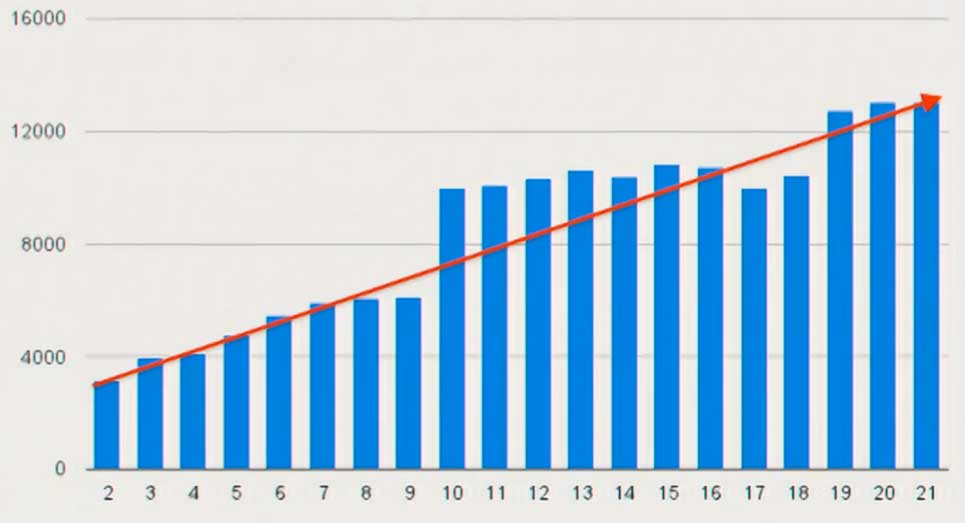V8 Benchmark Suite – Version 7
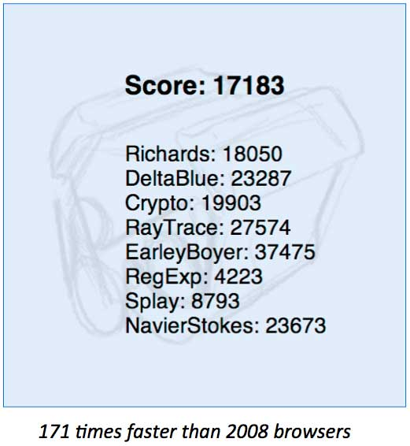Mobile Performance
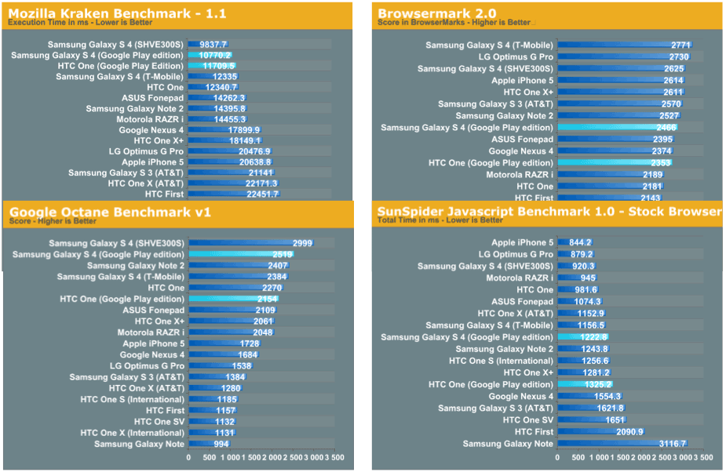Exercise
Go tohttp://goo.gl/zdL3ye
Then use the lat/lon you found in:
http://itouchmap.com/latlong.html
Demo
linkThe Next Generation
New Generation of Huge Web Apps
- Web apps are really REALLY big
- ~500,000 loc JavaScript - gmail
- ~600,000 loc JavaScript - amazon.com
- ~900,000 loc JavaScript - espn.com
- ~1,500,000 loc JavaScript - cnn.com
Execution Time Today
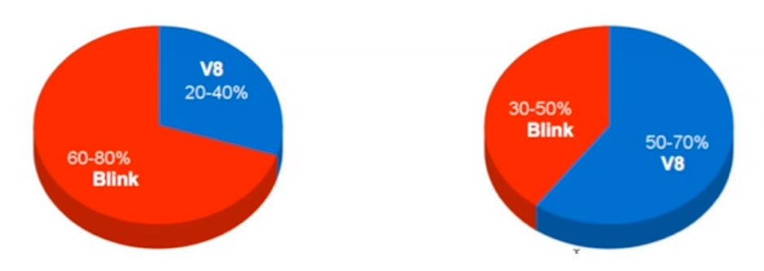Today’s Applications
- Long Running
- Heavy
- Data Rich
- Communications Rich
- Multimedia Rich
- Graphically Heavy
- Heavy Interactivity
TypeScript
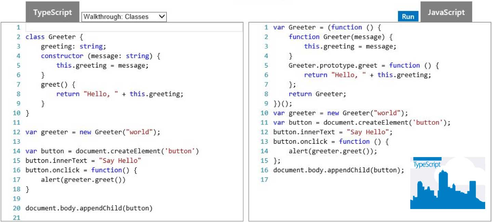Asm.js
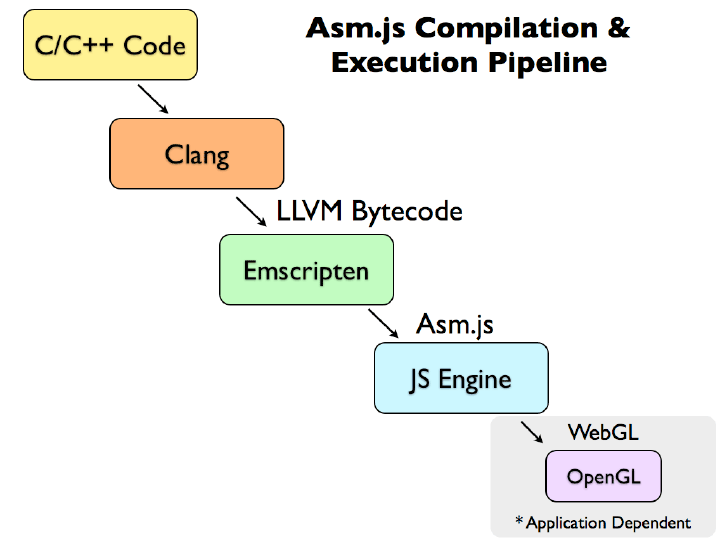Video Games
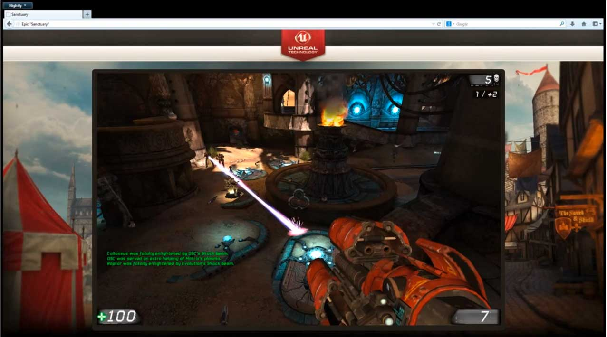Demo
cubeOgre
Sphere
YouTube
The Server Side
Blocking
- Many web applications have code like this:
- 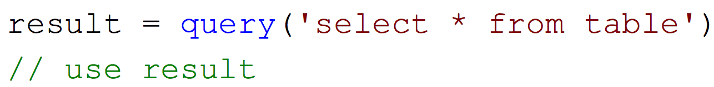
- What is the software doing while it queries the database?
Access Times
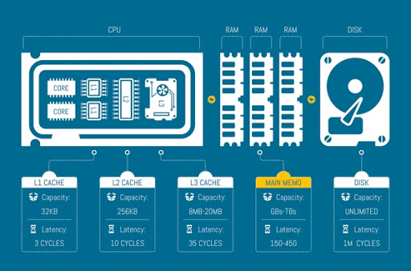City
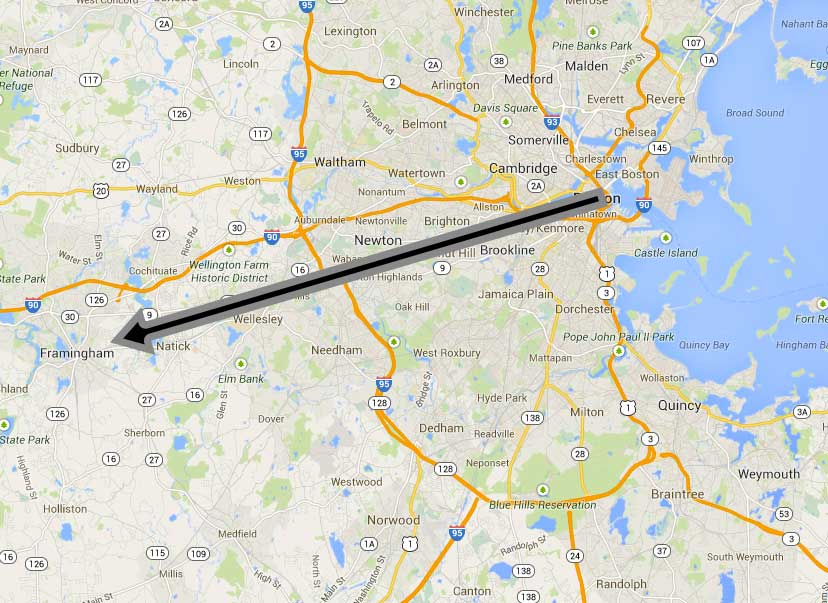Country
Mars

V8 Server Side
- Investment in V8 leveraged server side
- Bindings to the V8 JavaScript VM
- Runs programs that do I/O in JavaScript
- Focused on performance
Node.js
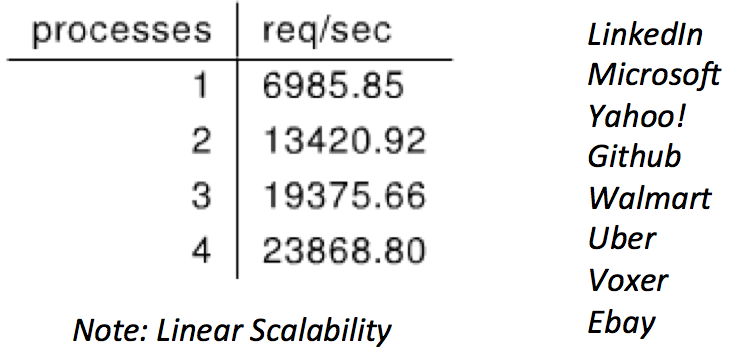
Storage
Storage

Horizontal Scale
- Less is more approach
- Horizontal Scalable Architecture
- Design considerations
- Make the database more accessible
- Easier to work with
- Easier to understand
- Designed for web use cases
JSON Documents
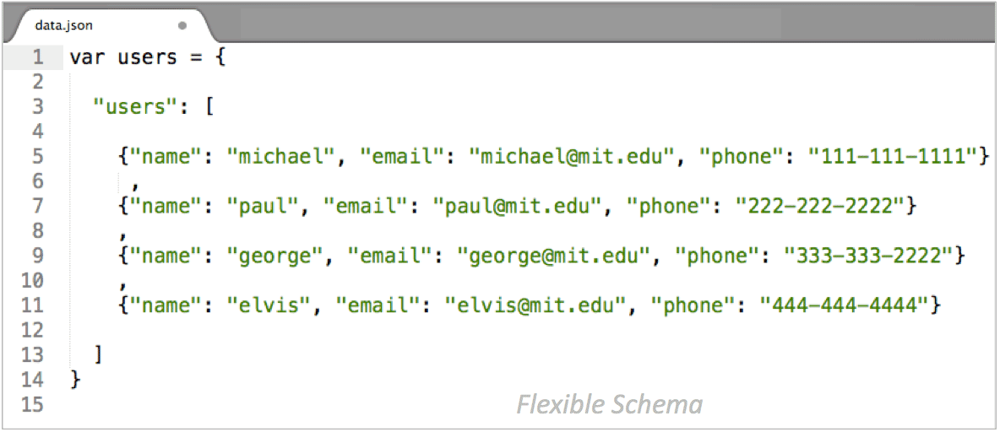Performance vs. functionality
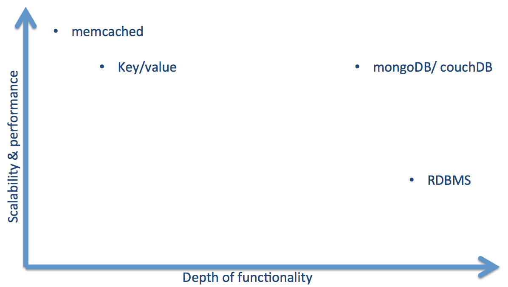Big Storage
Big Data
Internet Minute

Jet engine 10TB of data in 30 minutes

Internet of Things

Internet of Things